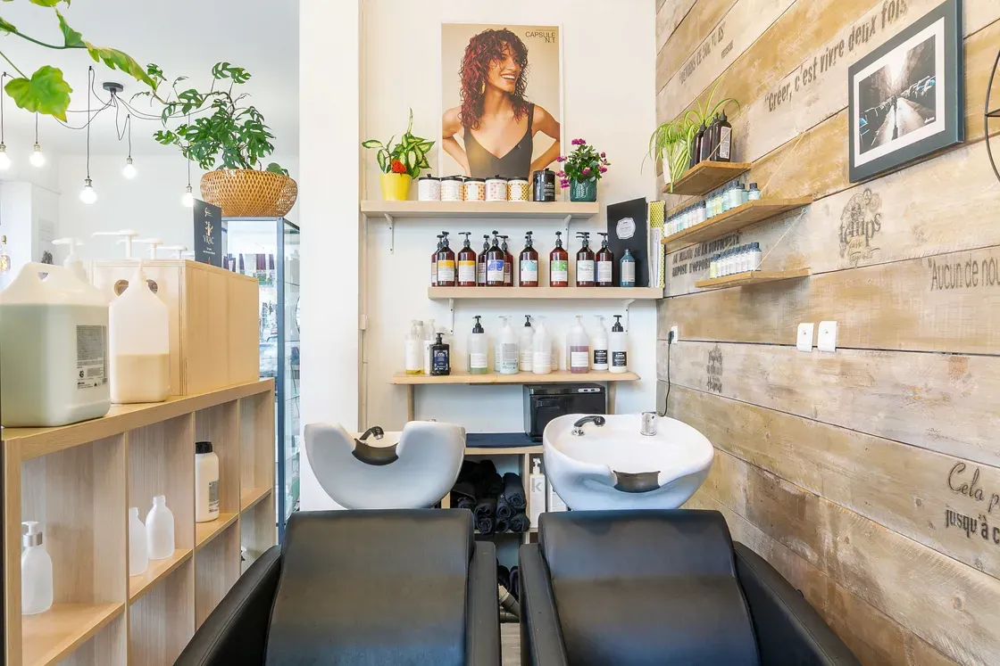
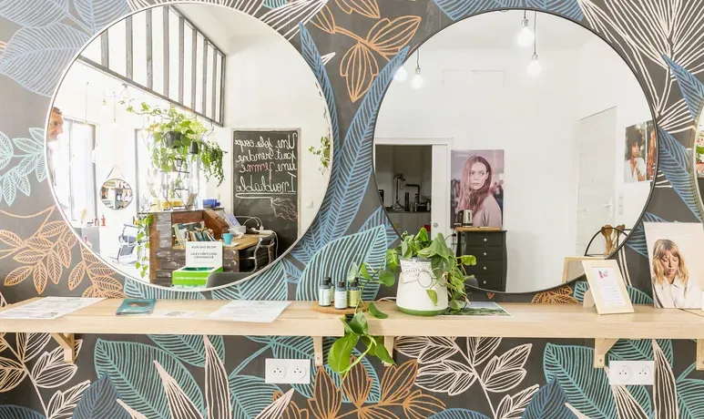
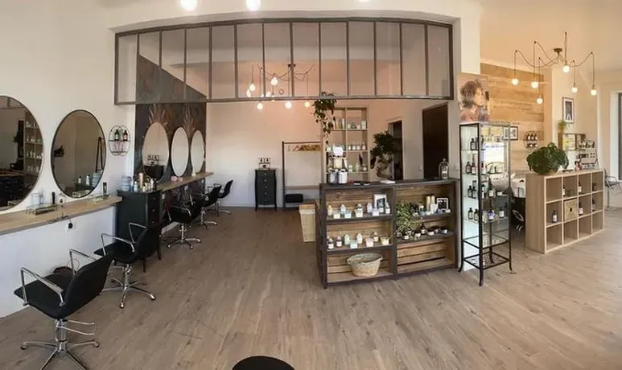
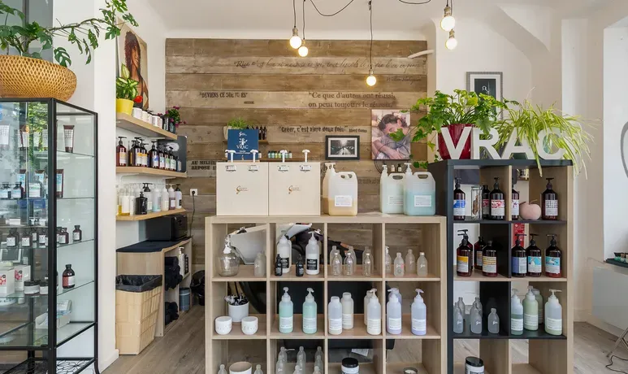
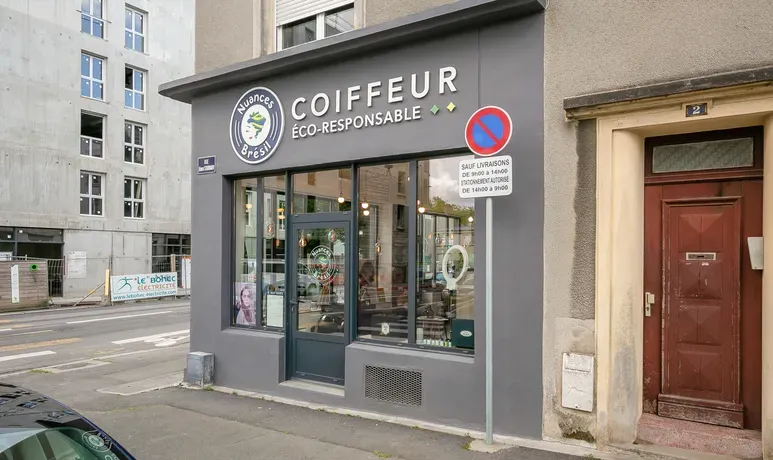

On commence par vous écouter.
Avant le premier coup de ciseaux, on s’assoit avec vous. Votre demande, l’histoire de vos cheveux, vos matins pressés. On reformule jusqu’à être sûr d’avoir compris, parce qu’une bonne coupe démarre là.
Nuances Brésil, coiffeur éco-responsable à Brest. Ici, on écoute d’abord, on coupe juste ensuite, et on vous montre comment prendre soin de vos cheveux, lisses, ondulés, bouclés ou crépus.
Horaires du jour


Avant le premier coup de ciseaux, on s’assoit avec vous. Votre demande, l’histoire de vos cheveux, vos matins pressés. On reformule jusqu’à être sûr d’avoir compris, parce qu’une bonne coupe démarre là.
Bouclés, frisés, crépus : on travaille la boucle là où elle vit. On regarde comment elle tombe, rebondit, se rétracte, puis on coupe en conséquence. Pas de coupe standard plaquée sur votre texture.
Un shampoing qui prend son temps, un soin choisi pour votre fibre, puis les gestes à refaire chez vous. Vous repartez avec la routine, pas seulement avec la coupe.

Au salon, les produits se prennent aussi en vrac : vous venez avec votre flacon, on le remplit. Moins d’emballages jetés, et des soins qui durent plus longtemps que le rendez-vous.

Pas de liste de prix à rallonge ici : les tarifs et la carte complète sont sur Planity, là où se prend le rendez-vous.
La texture d’abord. On observe votre boucle au naturel, on décide ensemble, puis on coupe en respectant son mouvement.
« Si vous avez les cheveux bouclés/crépus, vous pouvez y aller sans avoir peur. »
Léa, dans son avis
Une coupe qui se coiffe presque seule le matin : longueur, volume, forme du visage, discutés avec vous, puis expliqués pour la recoiffer chez vous.
Vous montrez ce que vous avez en tête, on le reproduit à l’identique et on vous donne les gestes d’entretien.
Le dernier coup de main avant le miroir, celui qui met la coupe en forme et vous fait parfois hésiter une seconde devant votre reflet.
Eau tiède, gestes lents, un soin choisi pour votre fibre. Le moment où même les cheveux compliqués se détendent.
Vous repartez avec une routine, pas seulement une coupe : les bons gestes, les bons produits, et la possibilité de remplir votre flacon sur place.
Six temps, dans l’ordre où ils se passent. Rien de caché, rien de pressé.

On pousse la porte sous les suspensions, entre les plantes. Vous posez votre sac, on pose la première question.
Votre demande, vos habitudes, ce qui vous a déjà déçu. On reformule jusqu’à ce que ce soit limpide pour tout le monde.
Eau tiède, gestes lents, soin choisi pour votre fibre. Les épaules se relâchent, les cheveux aussi.
Ciseaux, peigne, regard. On travaille la boucle là où elle vit, et on vous montre ce qu’on fait au fur et à mesure.
Brushing, boucles définies, dernière retouche. Puis les gestes à refaire chez vous, expliqués un par un pour que le résultat dure.
On vous le tend. C’est le moment où l’on vérifie, ensemble, que c’est bien vous. Et on remplit votre flacon avant que vous repartiez.
Au salon, une partie des produits se prend en vrac. Vous apportez votre flacon, on le remplit, et l’emballage ne finit pas à la poubelle après deux semaines.
Du lundi au vendredi de 9 h à 19 h, le samedi de 9 h à 18 h. Les textures vont de la raie droite (1A) à la boucle serrée (4C) : on les regarde toutes avant de couper.
Cinq coins du salon, tels qu’ils sont. Cliquez pour agrandir.
C’est la première fois que je venais dans ce salon et je suis sortie avec le sourire, le coiffeur Léo a été très doué, il a compris ma demande et m’a conseillé. Il m’a aussi appris à en prendre soin et lors du shampoing il a utilisé un soin qui a fait beaucoup de bien à mes cheveux qui pourtant sont compliqués. L'ambiance est plaisante et chaleureuse. L'équipe est incroyable et très gentille. Il m'a fait un brushing et j'avoue je ne me reconnaissais pas. Je reviendrai, c'est certain!
Je suis venu pour faire une wolfcut (homme)
C'est Lina qui m'a coiffé, elle a écouté ce que je voulais et a su le reproduire à l'identique. Elle m'a même donné des conseils pour l'entretient
Ambiance agréable et très rassurante !
J’ai été pour la première fois à Nuances Brésil et je suis ressortie de mon rendez vous très satisfaite du résultat. La coiffeuse a été très à l’écoute de mes envies et m’a même donné des conseils.
Si vous avez les cheveux bouclés/crépus, vous pouvez y aller sans avoir peur.
Cela fait maintenant un an que je confie mes cheveux à Josy, et je suis toujours aussi ravie !
Ayant les cheveux bouclés, j’ai toujours eu la hantise des salons qui désépaississent la masse ou qui coupe trop court, faute de savoir travailler la boucle. Ici, les professionnels comprennent les cheveux texturés et savent en prendre soin sans mauvaise surprise.
L'accueil est toujours chaleureux et toute l’équipe fait preuve de professionnalisme. On s'y sent bien et on repart toujours avec le sourire. Je vous recommande ce salon à coup sûr, vous pouvez y aller les yeux fermés !
Cela fait plusieurs années que je viens me faire couper les cheveux bouclés à Nuances de Brésil et je recommande fortement. La coupe est rapide et efficace. Le moment est toujours plaisant et je suis toujours sortie satisfaite de mes rendez-vous.
Réservez en ligne en quelques secondes, ou appelez le salon. Il est ouvert du lundi au samedi.
Nuances Brésil Brest Harteloire
2 Rue Bernard Scheidhauer
29200 Brest
Horaires du jour
| Lundi | 9 h – 19 h |
|---|---|
| Mardi | 9 h – 19 h |
| Mercredi | 9 h – 19 h |
| Jeudi | 9 h – 19 h |
| Vendredi | 9 h – 19 h |
| Samedi | 9 h – 18 h |
| Dimanche | Fermé |
Les horaires peuvent être modifiés, notamment les jours fériés : en cas de doute, appelez-nous.